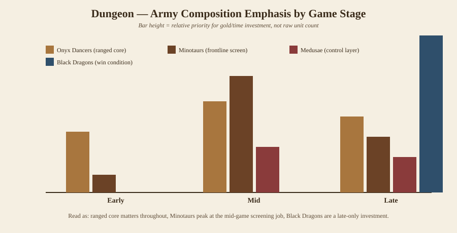
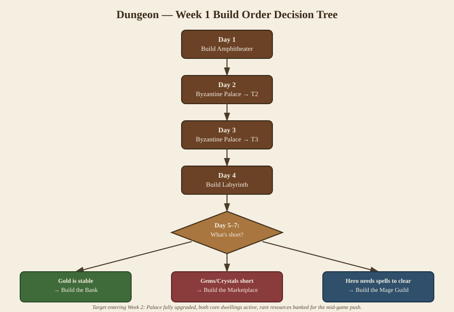

Dungeon¶
⭐ Overall Power: 5/5 · 🟢 Beginner Friendly: 3/5 · ⚔️ Campaign Strength: 4/5 💰 Economy Value: 3/5 · 🧠 Skill Ceiling: 4/5 📈 Early: 4/5 · Mid: 4/5 · Late: 5/5
Reference¶
(What the wiki says, translated into plain English — no opinions yet.)
- Governing body: The Triumvirate of Alvar — formerly an underground power, now operating as the backstage rulers of Jadame.
- Identity / theme: Dark elves, beasts, and dragons. The faction's signature trait is flexibility — nearly every unit has two distinct attack types rather than one fixed role.
- Faction skill — Triumvirate's Strength: every Dungeon hero starts with this skill, and no other class can learn it. Once per turn, before or during combat, the hero picks one of three stances that buffs the whole army for that fight. The stance stays active until you switch it, so it also functions as a between-battle mode toggle:
- Minotaur Stance → boosts Attack
- Dark Elf Stance → boosts Defense
- Dragon Stance → boosts Spell Power
- Native terrain: Underground (subterranean maps).
- Key resource dependency: Gems. Dungeon's Tier-VII creature dwelling (Cave Palace, home of Dragons) requires Gems on top of Gold, and hiring the Dragons themselves also costs Gems, not just Gold. Ore is a secondary early bottleneck for mid-tier dwellings.
- Unit roster (T1–T7), with upgrade paths:
| Tier | Base unit | Upgrade A | Upgrade B |
|---|---|---|---|
| T1 | (scout/cheap unit) | ||
| T2 | Infiltrator | Guile Infiltrator | Bleak Infiltrator |
| T3 | Dancer | Onyx Dancer | Jasper Dancer / Aureate Dancer* |
| T4 | Minotaur | Minotaur Lord | Minotaur Vanguard |
| T5 | Medusa | Medusa Sculptor | Medusa Queen |
| T6 | Hydra | Chthonic Hydra | Infernal Hydra |
| T7 | Cave Dragon | Black Dragon | Ashen Dragon |
*Community sourcing lists both Jasper and Aureate Dancer as upgrade names in different builds — verify against the current patch before treating this row as final; flagged for the next audit pass.
- Hero classes: Dungeon fields both a Might class and a Magic class.
- Overlord (Might): like all Might heroes, cannot learn Thaumaturgy — leans on tactics, brute force, and the stance system instead of spells.
Analysis¶
(Why it matters — this is the original content, not wiki restatement.)
Strengths¶
- Best-in-game clear speed. Onyx Dancers give Dungeon the fastest, most efficient early-game ranged clearing of any of the six factions — the single biggest reason it's widely rated the strongest faction at launch.
- Dual-attack flexibility. Because most units carry two attack types, Dungeon armies adapt to a wider range of enemy compositions than single-role rosters.
- Stance system gives free, repeatable tactical flexibility — you're never locked into one buff profile for the whole game the way a fixed passive would lock you.
- Best late-game payoff in the game. A Black Dragon stack backed by upgraded ranged units is considered one of the single strongest late-game army configurations across all factions.
Weaknesses¶
- Gem-gated Tier VII means the strongest unit in the roster is the most resource-fragile — a Gem-poor map materially delays your win condition.
- Early roster (Infiltrators) is fragile and easy to over-invest in if you're new to the faction; it looks like a core unit and isn't.
- Rewards map knowledge and resource-route planning more than factions with flatter power curves — part of why it's rated only middling on beginner-friendliness despite being top-tier in raw power.
Economic priorities¶
- Ore first — gates several mid-tier dwellings and is the first hard bottleneck.
- Gems second — becomes critical once you're building toward the Tier VII Dragon dwelling; claim Gem outposts as soon as the mid-game building path is secure.
- Gold requirement for the Week 1 build is comparatively low, which is what makes the early rare-resource demands manageable if you scout for them deliberately.
Army composition¶
- Early: Onyx Dancers as the clearing core, a small Infiltrator stack only for cheap chip damage — not a real investment.
- Mid: Minotaurs added as the frontline screen (their job is to absorb hits, not to out-damage the ranged core — don't judge them by raw damage), Medusae added as a second ranged/control layer once mid-tier buildings are up.
- Late: Black Dragons as the win condition, layered behind upgraded ranged units (Toxic Troglodytes' long-range attack is worth keeping active specifically because it avoids provoking retaliation).

Best hero archetypes¶
- Overlord (Might): stance-driven tactical play, front-loads Attack or Defense depending on matchup; no Thaumaturgy access, so army quality and stance timing carry the hero rather than spellcasting.
- (Magic-class Dungeon hero entry pending audit — wiki coverage for the
Dungeon spellcaster class was incomplete at time of writing; see
_audit.md.)
Abilities — the passive and Focus layer¶
How this works (verified from first-party documentation): every unit carries up to two kinds of special abilities. Passives are always on — auras, triggers, movement types, attack-type clauses. Actives cost Focus Points, which units accumulate by attacking and being attacked; bank enough and the ability fires. This layer is where Olden Era's combat depth actually lives — two stacks with identical stat lines can play completely differently — and it's what the Focus economy tools in this book (Murmuring, Energize, Battle March, Fancy Mask, Silence) exist to accelerate or deny.
Verified Dungeon abilities:
| Unit | Ability | Type | Effect |
|---|---|---|---|
| Whole roster | Dual attack types | Passive (identity) | Every unit switches between two attack modes — the faction's defining versatility clause |
| Hydra line | Sweeping Strike | Passive | Every attack damages the target and the two hexes beside it |
| Hydra line | No Counterattack | Passive | Sweeps are never punished — combined, a free three-hex cleave every swing |
| Medusa line | No Range Penalty | Passive | Full damage at any distance |
| Jasper Dancer | No Melee Penalty | Passive | The shooter core keeps damage in contact |
| Black Dragon | Spell Immunity | Passive | Immune to spells — the Armageddon-build enabler |
| Infiltrator line | Native Luck 1–2 | Passive | The roster's crit undercurrent |
Focus priorities: Dungeon's verified layer is passive-heavy by design — its "abilities" are permanent clauses, not banked charges, which is exactly why the chapter rates it the most forgiving expert faction: the toolkit can't be Silenced off. The Focus game here runs through the hero: Triumvirate's Strength stances (with the Flow subskill: +1 Focus Charge per stance pick) turn every round's stance choice into ability fuel. Position Hydras so the sweep clips two targets minimum — a Hydra hitting one hex is leaving a third of its printed damage on the table. (Per-unit actives for the Dancer/Minotaur/Medusa lines: audit-tracked fetch.)
Recommended magic schools¶
(Filled from the completed magic-category chapters, 2026-07-03.)
Primary: Primal — for one legendary build and one great hero fit. The Black Dragon + Armageddon package (see the Primal chapter's Armageddon entry, ★★★★) is Dungeon's signature magic play: your spell-immune T7 shrugs off the map-wide 500-per-stack blast that deletes everything else. Even before dragons, Primal's damage suite fits Triumvirate's Strength perfectly — swap to the Spellpower stance the round you cast Chain Lightning and the stance bonus lands exactly where it counts.
Secondary: Daylight, one spell — Arina's Chosen. Dungeon owns its Masterful version: Sister Deira (Warlock) starts with "Mask of the Sun" (Masterful Arina's Chosen: the death-ward plus +1 action point, +1 effective SP per 3 hero levels — see the Daylight chapter). On a faction whose T7 costs Gems and whose elite stacks are genuinely irreplaceable, the game's best stack-insurance spell in native hands is worth building a second hero around.
Tech notes: Nightshade's Web protects the Onyx/Aureate Dancer core from melee divers (the Dancers' melee attack is -50%, so anything that reaches them halves your damage); and remember your own Black Dragons' spell immunity blocks your buffs too — Armageddon builds fly clean, buff builds and dragons don't mix.
Recommended magic-class hero¶
- Sister Deira (Warlock): Masterful Arina's Chosen, per her official wiki page — the Dungeon spellcaster entry previously pending audit, now confirmed. (Tellaris the Betrayed is the faction's other confirmed spell specialist per official patch notes; exact spell pending the hero-verification pass.)
Recommended secondary skills¶
(STUB — pending Skills-category sweep; do not guess these from other factions' skill trees.)
Best artifacts¶
(STUB — pending Artifacts-category sweep.)
Counters & bad matchups¶
(STUB — needs cross-faction matchup pass once all six faction chapters have a first draft; matchup claims aren't reliable until every faction has been researched to the same depth.)
Verified full roster (data-fill pass, 2026-07-03)¶
The official Dungeon Units table corrects and completes this chapter's original walkthrough: the roster begins with a Troglodyte line the draft missed, shifting the true tier ladder to Troglodyte (T1), Infiltrator (T2), Dancer (T3), Minotaur (T4), Medusa (T5), Hydra (T6), Cave Dragon (T7). Unit analysis above stands; here is the verified stat table (native terrain: Dirt):
| Tier | Unit | Cost | HP | Atk/Def | Dmg | Init | Spd | Notes |
|---|---|---|---|---|---|---|---|---|
| T1 | Troglodyte | 50g | 8 | 2/3 | 1–3 | 4 | 4 | Melee |
| T1 | Infernal Troglodyte | 60g | 8 | 3/6 | 1–3 | 6 | 5 | Melee |
| T1 | Toxic Troglodyte | 60g | 8 | 5/3 | 1–4 | 5 | 4 | Melee |
| T2 | Infiltrator | 115g | 13 | 6/2 | 3–5 | 6 | 5 | Luck 1 |
| T2 | Guile Infiltrator | 150g | 13 | 6/2 | 3–5 | 6 | 7 | Luck 2 |
| T2 | Bleak Infiltrator | 150g | 13 | 6/3 | 3–5 | 9 | 6 | Luck 2 |
| T3 | Onyx Dancer | 160g | 18 | 8/8 | 5–7 | 4 | 2 | Ranged |
| T3 | Jasper Dancer | 220g | 18 | 8/8 | 5–7 | 5 | 4 | Ranged, no melee penalty |
| T3 | Aureate Dancer | 220g | 18 | 8/8 | 5–7 | 7 | 3 | Ranged |
| T4 | Minotaur | 380g | 40 | 11/11 | 12–14 | 5 | 5 | Morale 1 |
| T4 | Minotaur Lord | 530g | 40 | 11/15 | 12–14 | 6 | 6 | Morale 1 |
| T4 | Minotaur Vanguard | 530g | 40 | 15/11 | 14–16 | 5 | 6 | Morale 2 |
| T5 | Medusa | 500g | 55 | 15/14 | 11–15 | 4 | 2 | Ranged, no range penalty |
| T5 | Medusa Sculptor | 720g | 55 | 20/17 | 15 fixed | 5 | 4 | Ranged, no range penalty |
| T5 | Medusa Queen | 720g | 55 | 15/14 | 11–15 | 7 | 3 | Ranged, no range penalty |
| T6 | Hydra | 1300g | 130 | 24/22 | 25–28 | 8 | 4 | Melee, no counter |
| T6 | Chthonic Hydra | 2000g | 160 | 24/34 | 25–28 | 8 | 5 | Melee, no counter |
| T6 | Infernal Hydra | 2000g | 130 | 30/26 | 30–38 | 10 | 6 | Melee, no counter |
| T7 | Cave Dragon | 3000g + 1 Gem | 275 | 29/25 | 45–50 | 11 | 8 | Melee |
| T7 | Black Dragon | 5000g + 2 Gem | 350 | 29/31 | 60–65 | 14 | 9 | Melee (+ spell immunity per its page) |
| T7 | Ashen Dragon | 5000g + 2 Gem | 300 | 37/25 | 60–65 | 12 | 11 | Melee |
Two reads the numbers add to the chapter's analysis: the whole roster runs on Luck/no-counter/penalty-free clauses rather than raw stat bloat — the "two attack types / versatility" identity in table form — and Black Dragon's Initiative 14 ties Grove's base Phoenix for the fastest-acting T7 body in the game, which is exactly what an Armageddon carrier wants.
Campaign Recommendation¶
First-week build order¶
| Day | Action | Why |
|---|---|---|
| 1 | Build the Amphitheater (base Onyx Dancer dwelling); recruit everything available | Starts weekly unit growth immediately — the earlier this is up, the more Dancers you have by Week 2 |
| 2 | Upgrade the town hall (Byzantine Palace) to Tier 2 | Increases Gold and Law Point income; income compounds, so this is worth doing before combat buildings |
| 3 | Upgrade the town hall to Tier 3 | Expensive, but the same compounding logic applies — later is strictly worse |
| 4 | Build the Labyrinth (Minotaur dwelling) | Unlocks your frontline screening unit before you need to fight anything that punishes a pure-ranged army |
| 5–7 | Flexible: Bank (if Gold-stable) / Marketplace (if Gems or Crystals are short) / Mage Guild (if your hero needs spells to clear safely) | Read your specific map's resource shortages rather than following a fixed script here |
Target state entering Week 2: town hall fully upgraded, both core dwellings (Amphitheater + Labyrinth) active, enough rare resources banked to push toward the Amphitheater's Dancer upgrade and the mid-game building path.

The Three Builds¶
- Dancer Rush — lean into the T1-3 ranged clear speed, prioritize Amphitheater upgrades over everything else, aim to out-tempo the opponent before Tier VI/VII armies exist on either side. Best on maps with easy early Gold and weak neutral guards.
- Ore-into-Gems Standard Build — the default 90%-of-games plan above: Ore first for the mid-game spine, Gem outposts claimed as soon as they're safe to reach, Black Dragons as the explicit long-game target from Day 1 planning.
- Stance-Flex War Hero — built around an Overlord who swaps stances turn-to-turn rather than committing to one; strongest in multiplayer/PvP-leaning campaign scenarios where you can't predict the next fight's shape and the flexibility outweighs a slightly slower power curve.
Common beginner mistakes¶
- Over-recruiting Infiltrators because they're cheap and available Day 1 — Gold spent here should almost always go to Minotaurs or Medusae once those buildings exist.
- Treating Minotaurs as underwhelming because their damage looks low on paper — their job is holding the frontline so Dancers don't eat retaliation, not winning the damage race themselves.
- Ignoring Gem outposts until the Cave Palace is already queued, which pushes the Dragon timeline later than it needed to be.
Advanced tactics¶
- Route scouting explicitly around Gem nodes in the mid-game rather than general exploration — on Gem-poor maps, plan the Dragon timeline to slip and compensate with a heavier upgraded-ranged-unit late game instead of forcing the Dragon spike.
- Use the stance system as a mid-combat read, not just a pre-battle choice — switching from Dark Elf (Defense) to Minotaur (Attack) once a fight is clearly won can accelerate the kill and reduce turns taken, which matters for chained fights in the same day.
Campaign Verdict: ★★★★★ (5/5)¶
Dungeon combines the fastest early clear speed in the game with what is widely considered the single best late-game army composition (upgraded ranged + Black Dragons), at the cost of a Gem dependency that punishes poor map knowledge and a fragile early roster that's easy to over-invest in as a new player. For campaign (single-player) play specifically, it's rated well-suited to Single Hero mode, which further plays to its clear-speed strength.
Related: Overlord (Hero Class) · Onyx Dancer · Minotaur · Black Dragon · Dungeon Laws · Dungeon Units — full roster
Sourcing note: built from the official Hooded Horse wiki (Dungeon,
Dungeon Units, Overlord, Minotaur, Chthonic Hydra, Cave Dragon, Infiltrator,
Guile Infiltrator, Bleak Infiltrator pages, retrieved 2026-07-03) plus
cross-referenced third-party strategy coverage for the Analysis and
Campaign Recommendation layers, which are original synthesis, not wiki
content. Sections marked STUB are intentionally left unfilled rather than
guessed — see _audit.md for what's still needed.